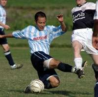
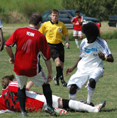

OLD STORIES - Sept 2006
 |
|
Steve Lidbury, man of match & hat-trick scorer. |
5-Star Embassy Continue Winning Streak
Fujitsu Big Circus, Hon Atsugi, Sun 17th Sept. “Come on lads, let’s not start sucking each other’s d*$ks just yet!” came the cry from inspirational BEFC goalie Giles Lever mid-way through the second half of this clash between perennial Metropolis league yo-yo clubs BEFC and Maritizio. Quite what was meant by that comment no one in his own team really knew, but it seemed to have a galvanizing effect for BEFC as they trotted out to a 5-1 victory over their division 2 rivals. Rest assured, nothing was sucked (at least not by this central defender), and the embassy’s unbeaten 2006 continues in style. more from befc...
TL.
The Shame of Two Halves…
Hachioji Park, Sat 16th Sept. Sala’s baffling inability to play from the start cost them two points for the second week in a row at Hachioji on Saturday, as they were again forced to come from two goals down to grab a draw.
TML league organizer and self styled ‘Tzar of Football’, Sala’s own Sid Lloyd, is now considering the option of barring first halves altogether, and playing only the second forty minute period. “That way we could get two games per booking on every pitch, and when we make it retro-active to the start of the season, Sala will be top of the league, so everyone’s a winner.” Quoth the Sid. more from Sala...
RC.
WSG kicked of the new season in fine style going 2-0 up on Sala after 20 mins into the new campaign the Geckoes new summer signings looked like they were settling nicely. more from Geckoes...
GS.
Swiss Goal-less Again.
OiFuto 1, Sat 16th Sept. This matchup is filled with history, unfortunately not much was added to that with a ho-hum 0-0 draw on Saturday at Oifuto. Both teams had their defenses ready to play thus few quality chances were created and the keepers dealt pretty easily with shots from distance. more from Swiss...
KN.
Beddingfield Saves Saturday for Sala!
(Then goes home early!)
 |
|
Dhugal gets blocked at the near post by BFC's beef Jyrki. |
OiFuto 2, Sat 9th Sept. What could have been a long, dull and fairly depressing Saturday in Tokyo, was surprisingly converted into a fun filled day of happiness and smiling babies everywhere, thanks to a last minute header by Ozzie stud Beddingfield against BFC, which rescued a draw for a Sala team staring another unfortunate defeat in the face. more from Sala...
RC.
Oops I did it again…
Never in his 3 years roaming the left for BFC has the Eggman scrambled a report together but this week he takes a leave from his reign in Muse to share his clichés, cringe-worthy puns and the promised “nobody-shall-be-spared” rant, plus of course his weekly analysis of the current exchange rate for eastern european working girls in the Pongi, this week contrasted to the going rate on Tong-Ren Lu in Shanghai, in the longest BFC match report to date. . more from BFC...
GK.
Swiss Hold Back Hungry Hibernian
St Mary's, Sat 9th Sept. Swiss vs. Hibernian is always a tough match, no different this time as the small pitch at St. Mary’s really makes it tight with some big lads on display.
The game ended 0-0 but the Hibs. have to be disappointed not to have come away with the victory.
Numerous chances in the box missed the target entirely (Bevan, Yama, Yohei, Mick) and some were just shot straight at Peter in goal. One of the clear mishaps was Yohei who just kicked the ground instead of the ball in spite of being in oceans of space – the ball ended up rolling softly to Peter. more from Swiss...
KN.
Well this was indeed 'one of those days' for the Hibs. Not in the way we played, but more the way we performed in front of goal.
The Hibs v Swiss is always a special game for the Hibs. The Swiss always have a good quality team, have a long and proud history in Tokyo and I have been on the hands of so many defeats too them that victory feels especially sweet. more from Hibs...
BC.
YC&AC 'Taw'pedo Strikes
|  |
|
Joe Takeda slides in on Brian Doyle. |
Misato, Sun 3rd Sept. More historic significance from the Misato riverside at the weekend. Your scribe maintained his remarkable record of scoring a goal in every decade since the Sudanese and British last lined up ......... etc etc
Frustrated with only 2nd best in every TML catagory last year, I have set my sights unequivocally on this years Golden Boot.
Readers will no doubt want to take note of how the goal transpired in the forlorn hope of replication.
You cannot teach this stuff.
It is art.
I have been doing it since the Sudanese and British last....... etc etc.
It is my job. Its what I do. more...
ST.
French Tied in Celtic Knots.
 |
|
Safe hands of Aki keep French at bay. |
Misato, Sun 3rd Sept. The Celts got their season off to a flying start with a well deserved win over the French. When the fixture was first made, not too many fancied the 10am kick off in Misato on a Sunday morning, but the way things panned out the Celts were happy to get out of the searing heat with 3 points.
Despite missing a number of key players, including last seasons top scorer, and Ruairi & Gav's new management technique of not bothering to do a warm up for fear the lads would have to get there on time the Celts started well and carved open a number of clearcut opportunities with Soh and Roberto going close.
15 minutes in and the Celts scored their first ever goal in Div 1 of the TML. more...
RH
Lions Missing Bite in 1st TML Outing.
|  |
|
Keith Crowley tackles 16-year old Omar Birkiya |
Misato, Sun 3rd Sept. It’s been more than half a century since a field witnessed so many Sudanese line up against the British, luckily this time, it was a football field, and a sporting event.
Lions had to do with a make shift team, that saw one striker play in goal, and the other at right-back due to losing players shortly before the game. more from Lions
HS.
2006: (Still) A Good Vintage for Red!
Misato, Sun 3rd Sept. Incredible as it may seem to anyone who witnessed BEFC's struggles in 2005, when they shipped so many goals that the referee had to put an assistant with one of those little thumb-operated click-counters by the Embassy goal just to keep score, the Reds finished TML3 strong, going undefeated in 2006. A few friendlies against soft opposition kept the streak going through the summer months. But could it last into the new season? Especially against TML newcomers, the - presumably hungry -Lions? more from BEFC
"Diplomatic Sources"
JETs Brought Down to Earth by Hibs
 |
|
Mark Eite & Josh Schirmer battle it out. |
St Mary's, Sat 2nd Sept. What a great way to start the new season! A beautiful dry sunny day, blue skies, 26 degrees and a football game in Tokyo! The Jets had not lost a TML game for over 12 months, and had high confidence after a 3-1 win over Sala in their debut game in the first division. They were looking to mark their arrival with style than a victory over the title defending Hibs. The Hibs had worked hard over summer to keep our fitness and match sharpness. more from Hibs...
BC
After a good result at the new Oi turf pitch against Sala to inaugurate their Div 1 season last week, the Jets knew they would be in for a tougher test against the TML 1 league champion at the Hibs' bumpy St. Marys home ground. Despite rumours that the Hibs were missing a few key players, the Jets, also missing a few strong players, started the game cautiously with just one up front. more from JETS...
SB
Coach Education Comes East
 |
|
Candidates smiles after 100% pass the Level 1 coaching licence. |
There were rousing cheers and audible sighs of relief from the 17-candidates upon hearing that they had all qualified for the 1st4sport Level 1 Certificate in Coaching Football, following their final practical assessments held at the Oi Chou Rinkai Koen sports complex in central Tokyo this month. The 13 candidates who participated in the Level 2 course held two weeks earlier at the Yokohama Country & Athletic Club, will be hoping for similar news come their final assessments next spring.
“The candidates were well above average to be fair,” says FA Coach Educator Stephen Lister during a course debrief. “And it was nice to have such a mixed bunch on the course. Aside from English candidates living in Japan, there were Americans, a Romanian, a candidate from Finland, as well as Scottish, Welsh and of course Japanese candidates,” he says. more
FJ.